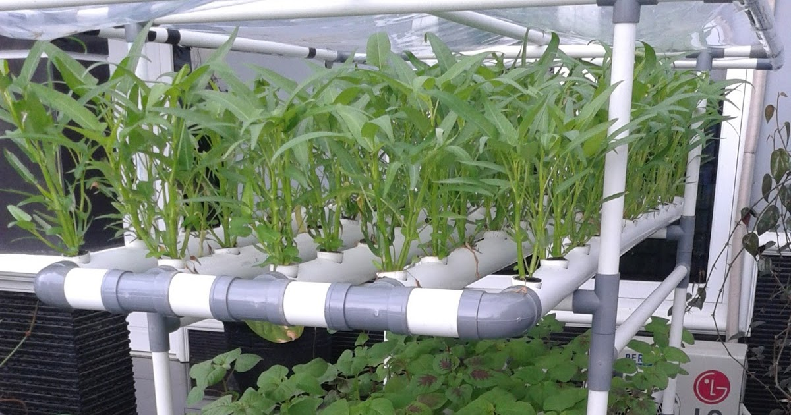
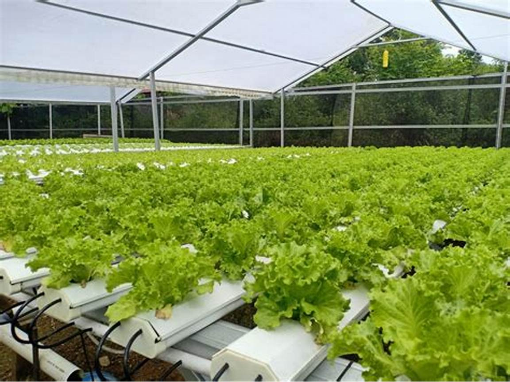
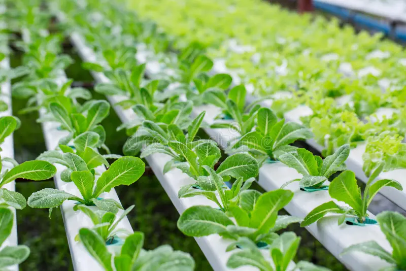

Jenis Tanaman yang Cocok untuk Hidroponik

Kangkung
Kangkung sangat mudah ditanam secara hidroponik. Cepat tumbuh dan cocok untuk pemula.
Selada
Selada adalah tanaman favorit dalam hidroponik karena perawatannya yang mudah dan hasilnya yang cepat.
Sawi
Sawi hijau atau putih sangat cocok untuk sistem hidroponik, baik di rumah maupun skala besar.